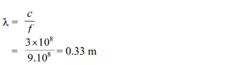

Sifat Gelombang Elektromagnetik
Di alam ini banyak sekali jenis gelombang, misalnya menurut arah getar dan arah rambatnya, gelombang memiliki dua jenis yaitu gelombang tranversal dan longitudinal. Gelombang tranversal adalah gelombang yang arah rambatnya tegak lurus arah getarnya. Sedangkan gelombang longitudinal adalah gelombang yang arah rambatnya sejajar arah getarnya.
Kemudian menurut mediumnya, gelombang juga memiliki dua jenis yaitu gelombang mekanik (membutuhkan medium) dan gelombang elektromegnetik (tidak membutuhkan medium). Dari proses pembentukannya, gelombang elektromagnetik ini memiliki keunikan dibanding gelombang-gelombang yang lain. Sehingga gelombang ini juga memiliki sifat-sifat khusus dan tidak dimiliki oleh gelombang yang lain. Sifat-sifat gelombang elektromagnetik di antaranya dapat dijelaskan seperti di bawah.
1. Gelombang elektromagnetik tidak membutuhkan medium dalam merambat. Dari sifat inilah dapat dijelaskan mengapa gelombang elektromagnetik dapat merambat dalam suatu medium maupun di ruang hampa.
2. Gelombang elektromagnetik tidak dibelokkan oleh medan listrik maupun medan magnet. Sifat ini juga dapat membuktikan bahwa gelombang elektromagnetik tidak bermassa dan tidak bermuatan karena medan magnet dan medan listrik hanya mempengaruhi partikel yang bermuatan.
3. Gelombang elektromagnetik termasuk gelombang
tranversal. Seperti halnya gelombang tranversal
lainnya, maka gelombang elektromagnetik akan
memiliki sifat-sifat sebagai berikut.
a. dapat mengalami pemantulan (refleksi)
b. dapat mengalami pembiasan (refraksi)
c. dapat mengalami interferensi (gabungan atau
superposisi)
d. dapat mengalami difraksi (pelenturan)
e. dapat mengalami polarisasi
4. Semua spektrum gelombang elektromagnetik memiliki kecepatan yang sama dan hanya tergantung pada mediumnya. Dalam hukumnya, Maxwell menemukan bahwa kecepatan gelombang elektromagnetik sama dengan kecepatan cahaya dan memenuhi persamaan berikut.
dengan
μ0 = permeabilitas vakum
ε0 = permitivitas vakum
Seperti gelombang secara umum, kecepatan
rambat gelombang elektromagnetik juga memenuhi
hubungan berikut.
dengan
c = cepat rambat gelombang elektromagnetik
di ruang hampa (udara) = 3 x 108 m/s
λ = panjang gelombang (m)
f = frekuensi (Hz)
Contoh soal :
Gelombang mikro memiliki frekuensi 900 MHz
dipancarkan dari sebuah radar. Berapakah panjang
gelombang mikro tersebut?
Penyelesaian
f = 900 MHz = 9.108 Hz
c = 3 x 108 m/s
